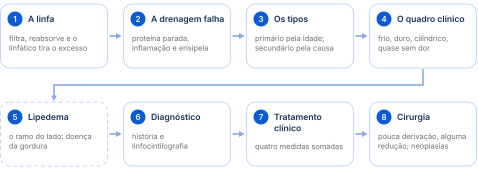
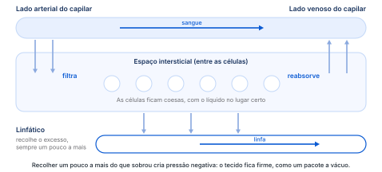
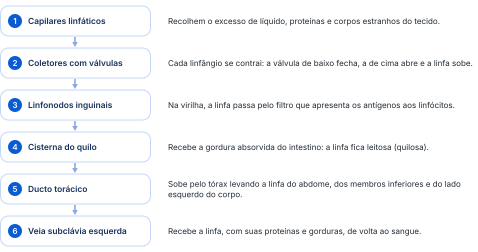
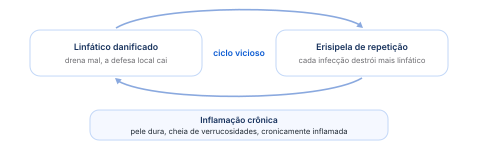
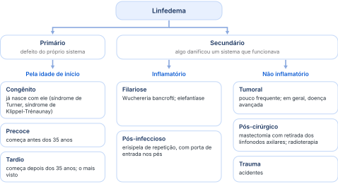

Muita sensibilidade
No inchaço que dói ao toque, a probabilidade de lipedema é maior.
Como a linfa drena, por que o linfedema endurece e infecciona, como separá-lo do lipedema e por que o tratamento é quase sempre clínico e combinado.
Organizada a partir da aula, com a linguagem ajustada para leitura autônoma. A legenda de cores está na página 2.
A Liga levou 20 trabalhos ao Congresso Brasileiro, na Bahia, e uma acadêmica do quinto ano da região ficou em segundo lugar na plenária, competindo com as capitais. Quando houver um congresso brasileiro da especialidade de que você gosta, e for perto, faça o esforço de ir: é ali que você conhece professores e serviços para a residência e começa o seu networking.
“Não tem nada ainda comparado a você conversar com olho no olho.”

Todo dia sai um pouco de líquido do sangue para o meio das células. A veia recolhe quase tudo, e os vasos linfáticos recolhem o resto, sempre um pouco a mais. Esse “aspirador” mantém o tecido firme; quando ele falha, o membro incha, e o inchaço só piora.
O linfedema é uma desordem do sistema linfático que dificulta a drenagem da linfa. É uma doença crônica e meio relegada ao segundo plano: muitos fisioterapeutas que tratavam doenças linfáticas migraram para a área estética. Uma perna com linfedema avançado pesa como um botijão de gás amarrado ao membro; imagine caminhar assim.
Há os linfedemas primários, em que é difícil determinar a causa, e os secundários. No Brasil, com o aumento do câncer, crescem os secundários, em especial ao câncer de mama: mastectomia, retirada dos linfonodos axilares e radioterapia.
A drenagem acontece todos os dias e varia de pessoa para pessoa. Quando o sangue chega ao membro, a pressão do lado arterial faz o líquido sair dos capilares para o espaço intersticial; o lado venoso reabsorve a maior parte, e o sistema linfático reabsorve o excesso.
Como o linfático recolhe sempre um pouco mais do que sobrou, cria-se uma pressão negativa no interstício, e é ela que mantém a forma do corpo. Pense no pacote de café embalado a vácuo: é um tijolinho firme; tirou o vácuo, ele se desmancha. Um murro no olho mostra o contrário: o olho incha porque o tecido perde a pressão negativa e se deforma.

Os linfáticos têm válvulas, como as veias, e bombeiam a linfa por conta própria. A unidade funcional que se contrai é o linfângio: a cada contração, a válvula distal se fecha, a proximal se abre e a linfa avança. O bombeamento vai sempre de distal para proximal e de lateral para medial.

O nome “cisterna do quilo” vem do aspecto: a gordura absorvida do intestino deixa a linfa leitosa, quilosa. Dali ela sobe pelo ducto torácico até a veia subclávia esquerda, que recebe um fluxo de linfa com proteínas e gorduras. O ducto linfático direito drena uma área menor.
Lesar o ducto torácico prejudica a drenagem do hemitórax esquerdo, do braço esquerdo, da hemiface esquerda, do abdome e dos membros inferiores. Exemplo: numa cirurgia cervical, o ducto é lesado e a linfa passa a vazar pela região do pescoço todos os dias. Com ela vão gorduras e proteínas, e a pessoa fica desnutrida.
O sistema linfático aspira os corpos estranhos do tecido e os leva aos linfonodos. O linfonodo funciona como um filtro: reconhece os antígenos e os apresenta aos linfócitos, que montam a defesa. É a segunda linha; a primeira acontece no próprio local.
Todo mundo produz e aspira linfa diariamente, e qualquer pessoa pode sofrer interferências que aumentam a produção:
Os linfáticos existem em grande quantidade e trabalham sempre acima do necessário para manter a pressão negativa. Se a produção de linfa sobe muito, eles conseguem aumentar a capacidade; passado o limite, começam os problemas que levam ao linfedema.
Quanto a capacidade de drenagem consegue crescer antes de falhar.
Quando o linfático não dá conta, o líquido e as proteínas ficam parados no tecido. A pele inflama e endurece, infecciona com facilidade, e cada infecção estraga mais o linfático. Por isso o linfedema avançado é tão difícil de reverter.
Os tomatinhos embalados a vácuo ficam arrumados numa bandeja quadrada; tirou o vácuo, caem todos para o fundo. Com o linfático funcionando, as células ficam coesas e o líquido fica no lugar certo. Quando há dano no sistema de drenagem, a pressão negativa se perde, o tecido se desorganiza e surgem edemas progressivos.
É próprio da doença linfática: as proteínas vão se depositando aos poucos e o subcutâneo inflama. Quanto mais avançado o quadro, mais difícil o tratamento.
“Uma vez que chegou nessa fase crônica, é muito difícil de você conseguir reverter.”
No início, todos têm a mesma queixa: um inchaço que piora no fim do dia, muito parecido com o da doença venosa. Com o tempo, a inflamação do próprio linfedema deixa o edema cada vez mais duro.
Com o sistema linfático comprometido, as infecções ficam mais fáceis. A infecção mais comum em quem tem problema linfático é a erisipela.

A infecção destrói o linfático e, com o linfático ruim, vem mais infecção. A inflamação crônica que resulta disso deixa a pele dura, cheia de verrucosidades e cronicamente inflamada.
Ou o sistema linfático já tem um defeito de origem (primário), ou algo o estragou depois (secundário): um parasita, infecções de repetição, câncer, cirurgia, radioterapia ou trauma.
Vêm de defeitos no próprio sistema de drenagem e se classificam pela fase da vida em que aparecem:
O caso típico do tardio é a mulher que, depois da primeira ou da segunda gravidez, conta: “a minha perna esquerda sempre foi maior; o sapato não servia, eu tinha de comprar um número maior, e depois da gestação piorou”. Ela liga o problema à gravidez, mas era um linfedema que já existia e descompensou com a carga de líquido da gestação.
Antes: precoce. Depois: tardio, o mais comum.
O quadro abaixo junta os primários e os secundários, que vêm a seguir.

O Brasil é um país tropical, com doenças endêmicas, e uma delas é a filariose, uma infecção parasitária. Depois da picada do mosquito infectado, as larvas migram para o sistema linfático para depositar seus ovos e criam uma infestação crônica. O parasita é a Wuchereria bancrofti, e a doença é conhecida popularmente como elefantíase.
Os linfedemas pós-infecciosos também são bem comuns: erisipelas de repetição vão destruindo o linfático. A porta de entrada costuma ser o pé, um dos piores lugares do corpo em higiene. Por isso o homem, que cuida menos dos pés (raramente vai à pedicure e corta mal as unhas), tem mais erisipela.
Onde falta dinheiro para trocar de calçado, ou onde ainda se trabalha descalço na roça, tudo isso é ainda mais comum.
“Então hoje no banho vocês vão lembrar como que é difícil cuidar do pé.”
Em Cascavel, as notícias são quase só de acidentes, e as vítimas da vez são os jovens de patinete elétrico, que calculam mal a velocidade para passar no sinal. Conselho para quem dirige: andar pelas preferenciais e tomar cuidado com os patinetes.
Hoje, a cirurgia que mais danifica o linfático é a mastectomia, porque parte dela é a retirada dos linfonodos axilares, que drenam a mama. A radioterapia piora a situação: a radiação ionizante é aplicada em várias sessões para matar a célula cancerosa, mas não é tão específica e também fibrosa o linfático.
O linfedema começa discreto, com o tornozelo inchado no fim do dia, e quase não dói. Com o tempo, a perna fica dura, cilíndrica e fria, e o inchaço não desce mais à noite. Nem todo inchaço é linfedema: obesidade, remédios e doenças do coração, do rim, do fígado e da tireoide também incham.
No estágio inicial, a pessoa quase não percebe: acha normal chegar em casa com a perna marcada. Com história de trauma ou de cirurgia, fica mais evidente. Nos primários, começa no tornozelo; a pessoa nota que o pé está um pouco maior e, um dia, que o inchaço não diminui mais depois de dormir. No início parece um inchaço venoso e até responde um pouco à elevação; com o tempo, o tornozelo perde o contorno e o quadro evolui.
Úlcera numa perna linfática. A doença linfática quase não ulcera. Se ulcerou, pense em neoplasia: não é comum, mas pode ser (capítulo 08).
Antes era a obesidade que chegava ao consultório como “inchaço”; agora é a moda do lipedema. Muita gente chega dizendo ter lipedema quando, na verdade, está acima do peso, e é preciso dizer isso com delicadeza. Outras causas de inchaço:
Lipedema é gordura doente: acumula sobretudo no quadril e nas coxas, dói ao toque e não sai quando a pessoa emagrece, enquanto os pés continuam finos. Não é um problema do vaso; é do tecido adiposo.
O lipedema é a doença da moda e sempre ganha uma mesa nos congressos vasculares. A parte mais difícil é separar quem tem obesidade de quem tem uma disfunção do tecido adiposo. Na opinião do Dr. Toregeani, não é doença vascular, e sim do tecido adiposo; faria mais sentido ser tratado pelo cirurgião plástico, que já faz lipoaspiração e lipoescultura. Como muitos pacientes têm inchaço e dor, acabam procurando o cirurgião vascular.
Quem tem lipedema costuma reclamar que é difícil tocar na perna: a pele é mais sensível de verdade, e até uma brincadeira vira “não encosta em mim, me dói”.
“Às vezes você tem a impressão de que a pessoa é fresca, mas na verdade ela tem uma disfunção, realmente é uma área mais sensível.”
No inchaço que dói ao toque, a probabilidade de lipedema é maior.
No inchaço que quase não dói, a probabilidade de linfedema é maior.
O teste prático é o peso. A pessoa obesa precisa baixar o índice de massa corporal para menos de 25, o padrão normal. Depois de emagrecer:
Se a pessoa chegou à faixa de peso normal e continua desproporcional, poupando os pés, a probabilidade de lipedema é maior.
Só depois de chegar ao peso normal a desproporção diz alguma coisa.
Muito glúten, muita lactose e alimentação inflamatória pioram os sintomas. O pior dia de quem tem lipedema é o rodízio de pizza com cerveja: no outro dia acorda inchada, com a perna dolorida. Exige mudar a dieta e reduzir a alimentação inflamatória, com orientação da nutricionista.
A maioria dos pacientes chega nos estágios 1 e 2, em que o tratamento é clínico:
Nos estágios 3 e 4, o acúmulo de tecido e a desordem são tão intensos que o tratamento clínico rende pouco; aí é melhor indicar cirurgia, como lipoaspiração ou lipoescultura.
Doença de um vaso: o sistema linfático. Inchaço frio, duro, quase sem dor, que pega o pé (sinal de Stemmer).
Doença de um tecido: o tecido adiposo. Dói ao toque, poupa os pés e não sai com o emagrecimento.
Na maioria das vezes, a história já sugere o linfedema. Para confirmar, o exame é a linfocintilografia: injeta-se no pé uma substância radioativa e observa-se se ela sobe pela perna até a virilha.
A história do linfedema primário costuma ser branda e com poucos sintomas, em especial a do tardio, que é o da maioria: a mulher que começa depois de uma ou duas gestações. Depois da história, vêm os exames.
Na cirurgia do câncer de mama, a linfocromia acha o linfonodo sentinela, o primeiro que recebe a drenagem da mama, na axila. Injeta-se o azul de metileno na mama e segue-se o caminho do corante até ele. O linfonodo é retirado para biópsia: se tiver célula cancerígena, a mulher pode já ter metástase.
Exemplo: no pé esquerdo, o contraste subiu e começou a se concentrar na região inguinal e no abdome; no direito, não subiu nada. A pessoa provavelmente tem linfedema no membro inferior direito.
Quase sempre se trata sem cirurgia, e nenhuma medida resolve sozinha. Somam-se a drenagem feita do jeito certo (do centro para a periferia), a compressão forte que inclua os dedos, o remédio de apoio e o cuidado com a pele e os pés para evitar a erisipela.
O tratamento do linfedema é clínico na maioria das vezes; raramente se opera, porque as cirurgias têm resultado muito pobre.
Para qualquer inchaço em quem não tem doença arterial, o tratamento é elevar o membro. No linfedema, funciona por um tempo. Quando a inflamação já acumulou proteínas no interstício, elas seguram a água ali (aumenta a pressão coloidosmótica do interstício). Mesmo com horas de perna para cima, a água não desce, ao contrário da doença venosa, em que elevar funciona muito bem.
Tratar o linfedema como varizes. Só elevar a perna não resolve o linfedema avançado. A elevação entra depois de uma boa drenagem e de um bom enfaixamento compressivo.
Diferente da doença venosa, na doença linfática é preciso tratar também os dedos. A compressão pode ser manual ou com bomba; a drenagem manual é melhor, mas faltam profissionais.
“Como é uma doença de difícil tratamento, como se diz, todo santo ajuda.”
Nos anos 90, um fisioterapeuta ganhava quase como um médico clínico, e havia fila para os cursos de terapia física complexa. Com o mercado inundado por novas faculdades, a profissão se rendeu aos planos de saúde: uma sessão chegou a valer R$ 7,00, enquanto o eletricista cobrava R$ 200,00 a visita. A maioria migrou para a estética, o Pilates, a reeducação postural global e a osteopatia; o mesmo ainda vai acontecer com a medicina.
A “drenagem linfática” da clínica de estética é uma massagem: começa pela perna e empurra o líquido para cima. É gostosa, mas não trata a doença. A terapia física complexa raciocina ao contrário. Imagine uma rodovia com manifestantes bloqueando o pedágio: não adianta, lá do trevo, empurrar os carros para a frente, porque o caminho está fechado.
Por isso ela começa desobstruindo os canais proximais, os linfonodos e os coletores do centro, e só depois traz o fluxo da periferia para ocupar esse espaço. Com menos inchaço, a nutrição do tecido melhora e caem as chances de infecções e de feridas.
Os remédios têm pouco efeito no linfedema, mas a maioria dos pacientes usa um flebotônico e linfocinético:
Cada medida rende pouco sozinha; juntas, controlam o inchaço.
Flebotônico e linfocinético: diosmina com hesperidina.
Terapia física complexa, do centro para a periferia.
Meia de alta compressão com dedos, ou wraps.
Cuidar dos pés para evitar as infecções de repetição.
As cirurgias que tentam religar o linfático a uma veia quase não funcionam. As que dão algum resultado retiram o excesso de tecido: são mutilantes, mas tiram o peso. Raramente, uma perna linfática de longa data vira câncer.
Restaurar um linfático é difícil. Toda a linfa do membro inferior vai para a cisterna do quilo e o ducto torácico e desemboca na veia subclávia, que fica acima do coração: o coração “chupa” o sangue dela, e a pressão lá dentro é baixa, muitas vezes negativa, quando estamos em pé.
Para entender o efeito massa: a queixa mais comum de quem faz mamoplastia redutora é dor nas costas. Se uma mama, que não tem um tamanho exorbitante, já cria esse problema postural, imagine um braço com 15 a 20 kg a mais pesando na coluna.
É o efeito massa que justifica a cirurgia redutora.
São raras, mas estão descritas:
Ligue com o capítulo 04: úlcera em doença linfática faz pensar em neoplasia.
O caminho da linfa: de distal para proximal, de lateral para medial; linfonodos inguinais, cisterna do quilo (leitosa pela gordura do intestino), ducto torácico, veia subclávia esquerda.
Aumentam a linfa: vasodilatador, varizes e dano no linfático. A reserva do linfático chega a 10 vezes a capacidade.
A infecção mais comum no linfedema é a erisipela; infecção e dano linfático formam um ciclo vicioso.
Primário: congênito, precoce (antes dos 35 anos) e tardio (depois dos 35, o mais comum: a mulher após uma ou duas gestações).
Filariose: Wuchereria bancrofti, a elefantíase.
A porta de entrada da erisipela é o pé: onicomicose, frieira, calçado velho, atrás do maléolo lateral.
A cirurgia que mais lesa o linfático hoje é a mastectomia com retirada dos linfonodos axilares; a radioterapia fibrosa o linfático.
Linfedema: sem pigmentação, quase não ulcera, cilíndrico, frio, pouca dor, sinal de Stemmer positivo. Úlcera: pense em neoplasia.
Dor ao toque sugere lipedema; pouca dor, linfedema.
Lipedema: com índice de massa corporal abaixo de 25, quadril e coxa continuam desproporcionais, poupando os pés.
Linfedema é doença de um vaso; lipedema, de um tecido.
Diagnóstico: linfocintilografia, com albumina marcada entre os dedos dos pés; o lado que não sobe é o doente.
Elevar a perna só funciona no começo: as proteínas do interstício seguram a água.
Terapia física complexa: desobstrui o centro primeiro e depois traz a periferia.
Tratamento sempre combinado: remédio (diosmina com hesperidina), drenagem, compressão com dedos e higiene dos pés.
Cirurgia: a derivação linfovenosa quase não funciona; a redutora tira o efeito massa (um braço pode ter 15 a 20 kg a mais), mas é mutilante.